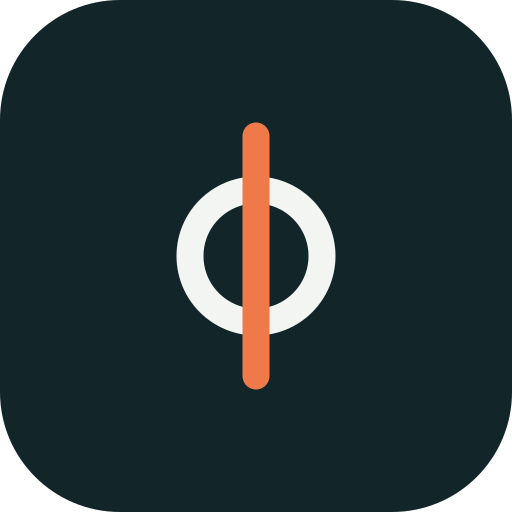

Brand guide · v1
One mark, three meanings.
The Afono symbol is the Greek letter φ. It is also a finger held over the lips, and it looks like the electrodes that read the signal.
φ, the name
Afono comes from the Greek áphōnos, "voiceless", which is spelled with φ.
Shh, the gesture
A finger over closed lips is the universal sign for silence. The bar is the finger, the ring is the mouth.
The electrode
Skin electrodes are round pads. The ring is the sensor, the bar is the signal passing through it.
Logo
Construction and use
Symbol
On a 64 × 96 grid: ring radius 22, stroke 9. Bar from 8 to 88 with round ends, same stroke. The bar always sits in front of the ring.
Lockup and clear space
Wordmark in Manrope ExtraBold, lowercase, tracking −4.5%. Everything else is set in Geist. Keep clear space equal to the ring's width on every side.

Icon and minimum size
App icon on ink. The symbol alone works down to 16 px tall; the lockup needs at least 24 px of height.
Colour
Teal speaks, orange signals.
Use one orange element per view: the bar of the symbol, or one call to action. Everything else is teal, ink and paper.
Type
Built to be read by everyone.
Body text uses Atkinson Hyperlegible, designed by the Braille Institute for readers with low vision.
Motion
The intro tells the story in 3 seconds.
A mouth opens, a finger says shh, the word appears, and a silent signal ripples out. Always skip it for people who ask for reduced motion.
| Time | What happens | Easing |
|---|---|---|
| 0.2 – 1.0 s | The ring draws itself clockwise from the top: a mouth opening. | cubic-bezier(.6, 0, .2, 1) |
| 1.0 – 1.5 s | The orange bar drops through the ring with a small overshoot: the finger. | cubic-bezier(.3, 1.6, .5, 1) |
| 1.4 – 1.8 s | The symbol squashes and settles, like a gentle tap. | ease-out |
| 1.8 – 2.6 s | The symbol slides left and "afono" rises in, 70 ms per letter. | cubic-bezier(.7, 0, .2, 1) |
| 3.0 – 4.1 s | One thin ring ripples out and fades: a signal without sound. | ease-out |
Voice
Plain, warm and exact.
We say
- "Reads the muscles of speech"
- "94.8% on a 51-word vocabulary, one speaker"
- "People with voice loss"
- "Runs on your device"
We don't say
- "Reads your mind" or "brain to text"
- A percentage without its vocabulary size
- "Suffers from", "the disabled"
- "Cures" or any medical claim
Files